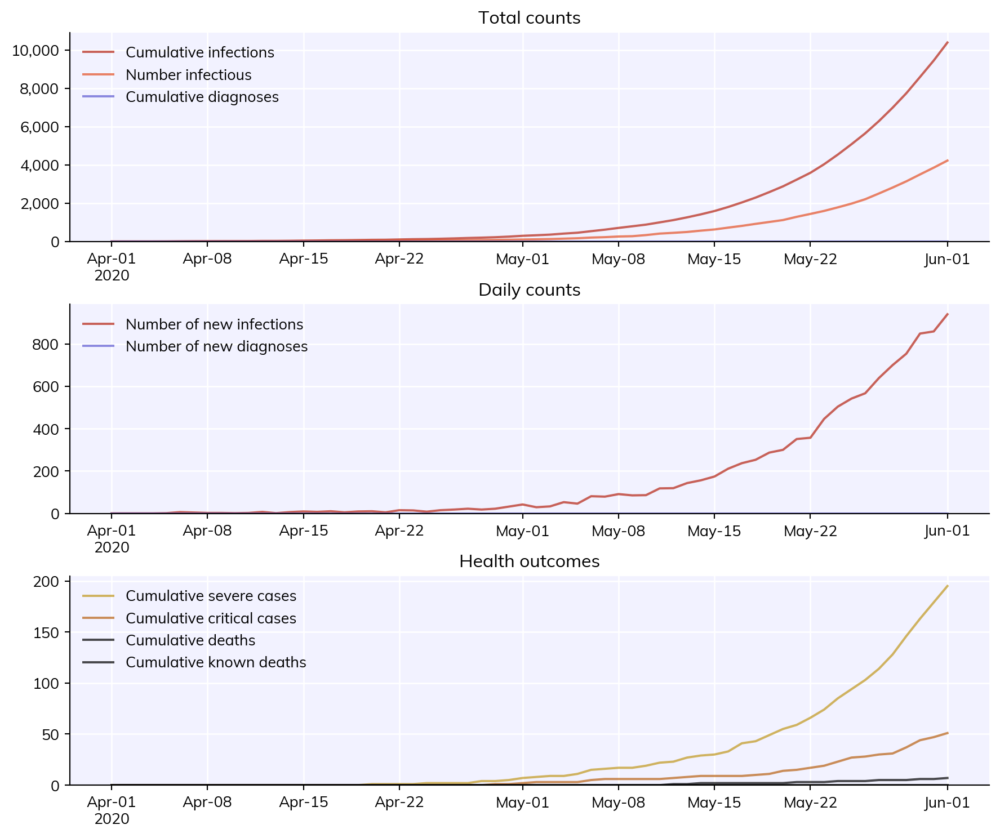

Parameters are defined as a dictionary. The most common parameters to modify are the population size, the initial number of people infected, and the start and end dates of the simulation. We can define those as:
pars =dict( pop_size =50e3, pop_infected =100, start_day ='2020-04-01', end_day ='2020-06-01',)
Running a simulation is pretty easy. In fact, running a sim with the parameters we defined above is just:
This will generate a results dictionary sim.results. For example, the number of new infections per day is sim.results['new_infections'].
Rather than creating a parameter dictionary, any valid parameter can also be passed to the sim directly. For example, exactly equivalent to the above is:
You can mix and match too – pass in a parameter dictionary with default options, and then include other parameters as keywords (including overrides; keyword arguments take precedence). For example:
sim = cv.Sim(pars, pop_infected=10) # Use parameters defined above, except start with 10 infected peoplesim.run()
As you saw above, plotting the results of a simulation is rather easy too:
fig = sim.plot()

Full usage example
Many of the details of this example will be explained in later tutorials, but to give you a taste, here’s an example of how you would run two simulations to determine the impact of a custom intervention aimed at protecting the elderly.
import covasim as cv# Custom intervention -- see Tutorial 5def protect_elderly(sim):if sim.t == sim.day('2020-04-01'): elderly = sim.people.age>70 sim.people.rel_sus[elderly] =0.0pars =dict( pop_type ='hybrid', # Use a more realistic population model location ='japan', # Use population characteristics for Japan pop_size =50e3, # Have 50,000 people total in the population pop_infected =100, # Start with 100 infected people n_days =90, # Run the simulation for 90 days verbose =0, # Do not print any output)# Running with multisims -- see Tutorial 3s1 = cv.Sim(pars, label='Default')s2 = cv.Sim(pars, interventions=protect_elderly, label='Protect the elderly')msim = cv.MultiSim([s1, s2])msim.run()fig = msim.plot(['cum_deaths', 'cum_infections'])